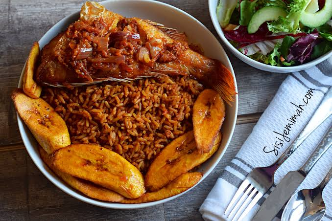

Jollof Rice is a dish that is common among the West Africans. It is deeply revered due to its pleasing aroma and spicy flavor.
It is often accompanied with rich source of protein food (fried Fish and beans), fried plantain or coleslaw.
Blend the tomatoes, pepper and one onion until smooth
Wash the rice and parboil it briefly. Drain and set aside.
Heat the oil in a large and add the oil for few minutes.
Add the tomato paste and fry for about 2-3 minutes, stiring so it doesn't burn.
Pour it in carefully and cook on medium heat until the mixture thickens and the excess water reduces.
Add thyme,curry powder,seasoning cubes and salt.
Put the parboiled rice into the sauce and mix thoroughly so the sauce coats the rice.
Add enough water to the rice, cover the pot tightly and cook on low heat.
After about 15-20 minutes, check the rice. If it's still hard and the liquid has dried up, add a small amount of water and continue cooking.
Once the rice is tender, gently stir it and allow to steam for another few minutes.